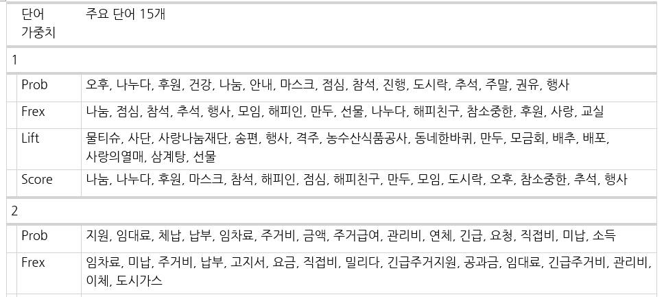

## 패키지 불러오기
pacman::p_load(
"tidyverse", "tidytext", "stm", "data.table", "knitr", "gt")들어가기
토픽모델링 주제 이름을 짓는 과정을 다룬다. 주제 명명은 주제별 주요 단어와 대표문서를 참고한다.
1. 토픽모델링
1.1. 모델링 사전 준비
패키지 불러오기
필요한 패키지를 불러온다.
데이터 전처리
토픽모델링 전 데이터 불러오기와 정제 과정을 거친다. 예제 코드 따라하기 위해선 아래 샘플 데이터를 다운받으면 된다.
| 샘플 데이터 | 설명 |
|---|---|
| db_record_v1 | 주거상담 메타데이터 |
| db_record_v2.csv | 주거상담 형태소분석 결과 |
| dict_userDefined.txt | 사용자정의 단어 사전 |
Note
단, 아래 샘플 데이터는 전체 중 100개를 무작위로 추출한 DB며, 이후 토픽모델링에 활용한 전체 데이터와 다르다.
먼저 데이터를 불러온다.
# 메타데이터 불러오기
db_recordMeta <- fread("Data/db_record_v1.csv")
# 형태소분석된 데이터 불러오기
db_record_1a <- fread(
"data/db_record_v2.csv",
select = c("id_f", "cons_text", "cons_text_posJoined_main") # 필요한 열만 불러오기
)
# 사용자정의 사전 불러오기
list_userDefined <- fread("data/dict/dict_userDefined.txt")[substr(V2, 1, 1) %in% "N"]$V1희소단어 제거로 토픽모델링 전 정제를 해준다.
# 희소 단어 제거를 위한 단어빈도 표
word_count <- db_record_1a %>%
unnest_tokens(word, cons_text_posJoined_main, token = stringr::str_split, pattern = " ") %>% # 띄어쓰기 기준
count(word, sort = TRUE) %>%
mutate(prop = cumsum(n) / sum(n))
# 제거할 단어 리스트
list_wordRemoved <- setdiff( # 차집합
setDT(word_count)[n <= 1]$word, # 빈도가 1개 이하인 단어 리스트
list_userDefined # 사용자정의 단어
)
# 희소단어 제거
db_record_f <- db_record_1a %>%
unnest_tokens(word, cons_text_posJoined_main, token = stringr::str_split, pattern = " ") %>% # 띄어쓰기 기준
filter(!(word %in% list_wordRemoved)) %>% # 희소단어 제거
# 제거 후 붙이기
group_by(id_f) %>%
summarize(cons_text_posJoined_main = toString(word)) %>% ungroup() %>%
mutate(cons_text_posJoined_main = str_remove_all(cons_text_posJoined_main, pattern = "//,|,")) %>%
inner_join(db_recordMeta, by = "id_f") %>% # 메타데이터와 붙이기
# 주요 품사가 한 개인 경우는 제외
filter(str_count(cons_text_posJoined_main, pattern = " ") > 0)모델링 준비
## 준비
processed <- as_tibble(db_record_f) %>%
textProcessor(
documents = .$cons_text_posJoined_main,
metadata = .,
lowercase = FALSE,
removepunctuation = FALSE,
removenumbers = FALSE,
removestopwords = FALSE,
stem = FALSE,
wordLengths = c(1, Inf),
language = "na"
)
out <- prepDocuments(
processed$documents,
processed$vocab,
processed$meta)
docs <- out$documents; vocab <- out$vocab; meta <- out$meta1.2. 토픽모델링
앞서 결정한 주제 개수로 stm 토픽모델링을 수행한다. 주제 개수는 25개며, 투입하는 공변인prevalence은 상담센터와 상담연도, 상담사가 지정한 주요상담욕구다. 공변인은 주제 확률 모형에서 고려해야 할 변수를 말하며, 주거상담은 센터별, 연도별, 주요상담욕구별로 다를 것이라고 생각했다.
SET_TOPIC_NUMBER <- 25 # 최종 주제 개수 지정
tm_fiited <- stm(
documents = docs,
vocab = vocab,
data = meta,
prevalence = ~ cons_center + cons_date_year + cons_type_adj, # 공변인
K = SET_TOPIC_NUMBER, # 주제 개수
init.type = "Spectral",
max.em.its = 500 # 수렴까지 반복 횟수
)모델링 한 결과 값은 rds 포맷으로 저장 가능하다.
tm_fiited <- write_rds(
tm_fiited, # stm model
"result/stmFinal_fit.rds" # 저장 루트
)2. 주제 이름 짓기
입력한 주제 수에 따라 나온 주제의 이름은 연구자가 지어주어야 한다. Topic 1, Topic 2와 같은 이름 없는 주제는 주제별 주요 단어와 대표문서를 참고해 명명할 수 있다.
2.1. 모델 불러오기
정해진 최종 주제 개수로 모델링한 stm 모델을 불러오자. 여기에서 전체 데이터로 stm 모델링한 결과를 불러올 수 있다.
tm_fiited <- readRDS("result/stmFinal_fit.rds")2.2. 주요 단어
주제별 주요 단어를 추출한다. 추출할 단어 개수를 설정하고 labelTopics로 단어를 확인한다.
wordNumber <- 5 # 보여질 단어 개수
output_wordPerTopic_1a <-
labelTopics(tm_fiited, n = wordNumber)주제 별로 4가지 종류에 따른 주요 단어를 볼 수 있다:
- Prob: 특정 토픽에서 나타날 확률이 높은 단어
- Frex: 특정 토픽에는 빈도가 높지만 다른 토픽엔 그렇지 않은 단어(가중 평균 적용)
- Lift: 특정 토픽에 고유한 단어 강조(다른 토픽 빈도 활용)
- Score: 특정 토픽에 고유한 단어(다른 토픽 로그 빈도 활용)
[1] "Topic 1 Top Words:\n \t Highest Prob: 오후, 나누다, 후원, 건강, 나눔 \n \t FREX: 나눔, 점심, 참석, 추석, 행사 \n \t Lift: 물티슈, 사단, 사랑나눔재단, 송편, 행사 \n \t Score: 나눔, 나누다, 후원, 마스크, 참석 \nTopic 2 Top Words:\n \t Highest Prob: 지원, 임대료, 체납, 납부, 임차료 \n \t FREX: 임차료, 미납, 주거비, 납부, 고지서\n ..."주제별 주요 단어를 다루기 편한 word 파일로 내보내는 작업은 아래와 같다.
rbind(
melt(data.table(topicnums = c(output_wordPerTopic_1a$topicnums), output_wordPerTopic_1a$prob), 1)[
, .(word_list = toString(value)), .(topicnums)][, type := "Prob"],
melt(data.table(topicnums = c(output_wordPerTopic_1a$topicnums), output_wordPerTopic_1a$frex), 1)[
, .(word_list = toString(value)), .(topicnums)][, type := "Frex"],
melt(data.table(topicnums = c(output_wordPerTopic_1a$topicnums), output_wordPerTopic_1a$lift), 1)[
, .(word_list = toString(value)), .(topicnums)][, type := "Lift"],
melt(data.table(topicnums = c(output_wordPerTopic_1a$topicnums), output_wordPerTopic_1a$score), 1)[
, .(word_list = toString(value)), .(topicnums)][, type := "Score"])[
, .(`주제 번호` = topicnums,
` ` = " ",
`단어 가중치` = factor(type, levels = c("Prob", "Frex", "Lift", "Score")),
`주요 단어` = word_list, topicnums = NULL)][order(`주제 번호`, `단어 가중치`)] %>%
gt(groupname_col = "주제 번호") %>%
tab_footnote(footnote = "
Prob: 특정 토픽에서 나타날 확률이 높은 단어,
Frex: 특정 토픽에는 빈도가 높지만 다른 토픽엔 그렇지 않은 단어(가중 평균 적용),
Lift: 특정 토픽에 고유한 단어 강조(다른 토픽 빈도 활용),
Score: 특정 토픽에 고유한 단어(다른 토픽 로그 빈도 활용)
") %>%
gtsave("result/주요단어_주제라벨링용.docx")단어별 4가지 가중치에 대해 주요 단어를 word 파일로 볼 수 있다.

2.3. 대표문서
주제를 대표하는 문서를 추출하는 방법은 아래와 같다. 각 문서는 모든 토픽마다 gamma를 가지고, 이는 그 문서에 해당 토픽 출현 확률이다. 예를 들어 문서 1에 주제 2의 gamma 값이 0.612라면, 문서 2의 단어 중 약 61.2%가 주제 2에 속한다고 해석할 수 있다. 이를 반대로하면, 대표문서를 추출하기 위해선 주제별로 gamma가 높음 문서를 추출하면 된다.
output_mainDocumPerTopic_1a <-
tidy(tm_fiited, matrix="gamma", document_names=meta$id_f) %>% # gamma 계산
mutate(topic=paste0("Topic ", topic), document=as.factor(document)) %>% # 'Topic' 문자열 추가
mutate(topic=fct_reorder(topic, parse_number(topic))) %>% # Topic 순서 지정
left_join(meta, by = c("document" = "id_f")) %>% # 메타데이터와 결합
distinct(topic, cons_text_posJoined_main, .keep_all = TRUE) %>% # 주제별 상담 중복 제거
group_by(document) %>% slice_max(gamma, n = 1) %>% ungroup() %>% # 각 문서별 gamma 최대값 주제만 남김
group_by(topic) %>% slice_max(gamma, n = 5) # 주제별로 5개 문서 제시
as.data.table(output_mainDocumPerTopic_1a)[
, .(`주제 번호` = topic,
`문서 번호` = document, `상담기록` = cons_text,
`정제상담기록` = cons_text_posJoined_main, gamma)] %>%
gt() %>%
gtsave("result/대표문서_주제라벨링용.docx")2.4. 주제 명명
주요 단어와 대표 문서를 보고 주제 이름을 연구자가 직접 지어주어야 한다.
여기서 예시로 든 샘플이 아닌 원데이터를 쓴 경우, 주제 12의 주요 단어와 대표 문서는 다음과 같았다.
| 가중치 | 주요 단어 15개 |
|---|---|
| Prob | 대출, 안내, 문의, 청년, 신청, 임차보증금, 소득, 가능, 은행, 서울시, 근로, 이자지원, 기준, 금액, 보험 |
| Frex | 이자지원, 임차보증금, 추천서, 전세자금, 대출, 버팀목전세대출, 은행, 융자, 청년전세임대, 서울주거포털, 청년, 하나은행, 득실, 청년월세지원, 증명 |
| Lift | 한국주택금융공사, 근로계약서, 원천, 금리, 버팀목전세대출, 보금자리, 보람일자리, 서울주거포털, 이자지원, 임차보증금, 전세자금, 징수, 청년월세, 청년월세지원, 추천서 |
| Score | 대출, 청년, 임차보증금, 이자지원, 소득, 추천서, 은행, 버팀목전세대출, 전세자금, 증명, 근로, 문의, 신청, 보험, 발급 |
| 토픽 번호 | 상담기록 | gamma |
|---|---|---|
| Topic 12 | * 청년임차보증금대출 1. 근로청년으로 지원, 소득증명원에 대한 문의 - 19년 7월 이직하여 소득증명원을 입력하려고 하는데 7월 이후 현직장 근로소득 원천징수영수증을 첨부하라고 함. - 전년도소득증명원과 현직장 근로소득 원천징수영수증 두가지 모두 첨부해야 하는지와 근로소득 기간에 대해 문의함. ㅡ> 소득증명원에 대해서 더 구체적인 사항은 청년임차보증금 전월세팀(02-2133-7047)로 문의할 것을 안내함. | 0.9714335 |
| Topic 12 | * 서울시 청년 임차보증금 이자지원 사업 1. 연소득이 4천만원을 초과하면 아예 지원이 불가능한 것인지 문의함 ㅡ> 연소득 4천만원 이하인 것이 신청 자격이기때문에 초과를 한다면 신청 불가능한 것이라고 안내함 2. 이것 말고 이용할 수 있는 상품이 있는지 문의함 ㅡ> 청년전용 버팀목전세자금, 청년 맞춤형 전세자금 대출 안내함 3. 중복가능한 상품인지 문의함 ㅡ> 중복이 가능한 것은 청년임차보증금 이자지원과 청년 맞춤형 전세자금 대출이라고 안내함 | 0.9698277 |
주제 12은 주요 단어로 대출과 임차보증금, 이자지원, 추천서 등이 주로 나타났고 대표문서에서도 청년임차보증금 제도 문의가 드러났다. 따라서 주제 12의 주제 이름은 청년임차보증금 문의로 지었다.